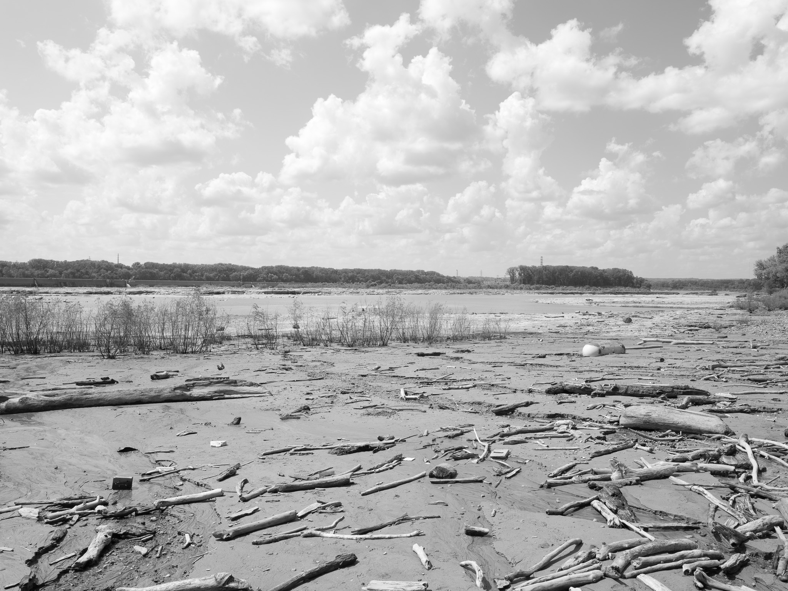
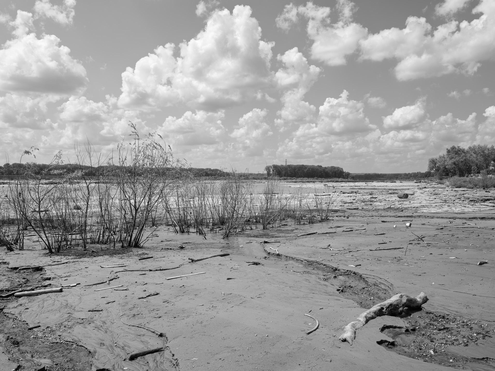
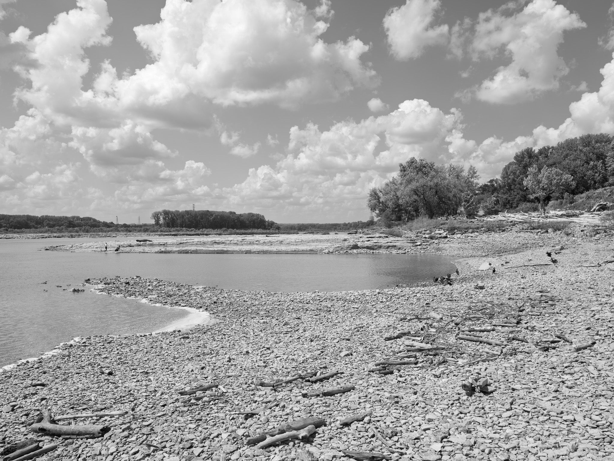
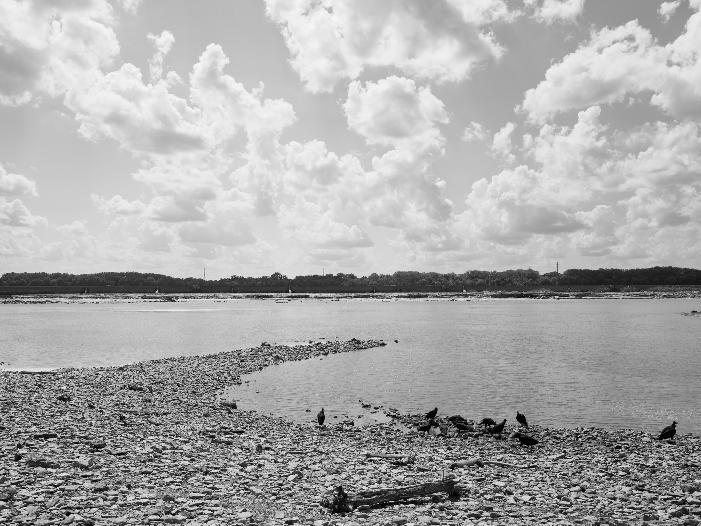
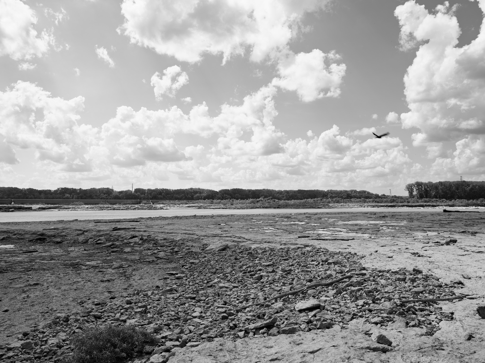
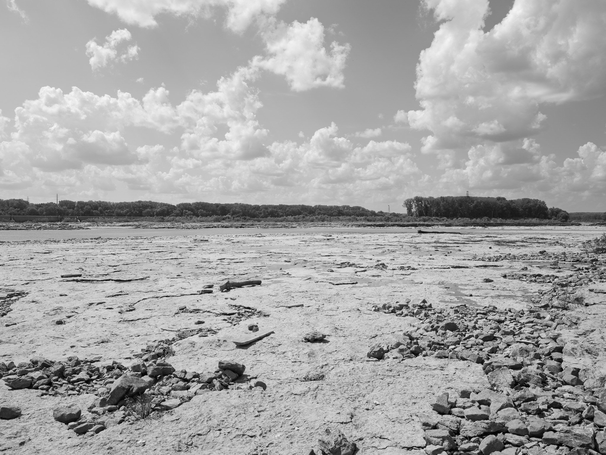
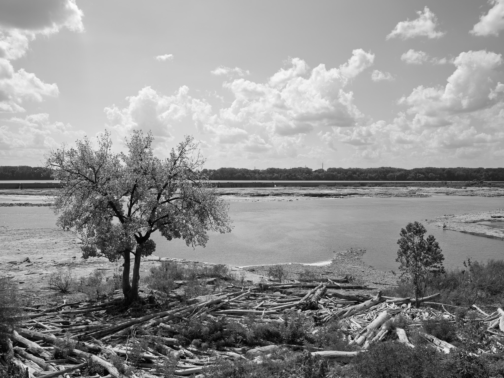

Public Lands Institute
Map
Images
Archive
About
Falls of the Ohio State Park
IN

Falls of the Ohio State Park 1 · 2026-08-31
_DSF4510.jpg

Falls of the Ohio State Park 2 · 2026-08-31
_DSF4514.jpg

Falls of the Ohio State Park 3 · 2026-08-31
_DSF4525.jpg

Falls of the Ohio State Park 4 · 2026-08-31
_DSF4529.jpg

Falls of the Ohio State Park 5 · 2026-08-31
_DSF4539.jpg

Falls of the Ohio State Park 6 · 2026-08-31
_DSF4542.jpg

Falls of the Ohio State Park 7 · 2026-08-31
_DSF4550.jpg
View all 7 images →
← Hovey Lake Fish and Wildlife Area
Cave-in-Rock State Park →